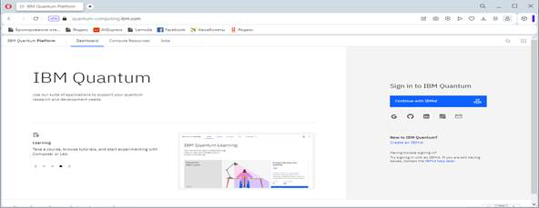
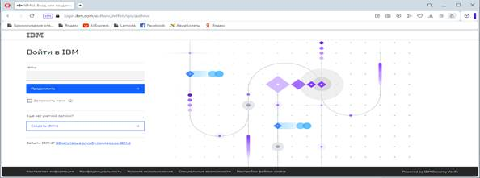
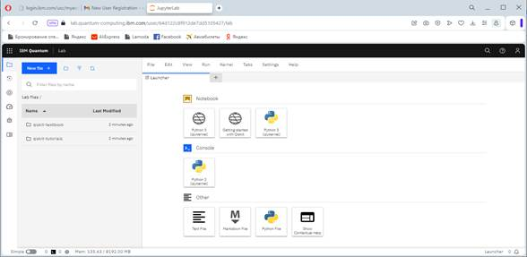
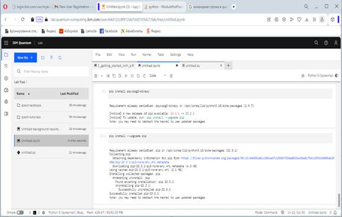
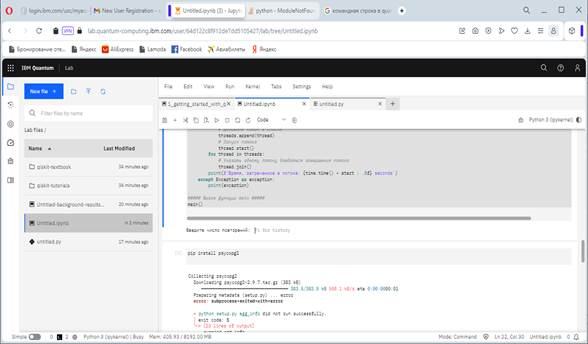
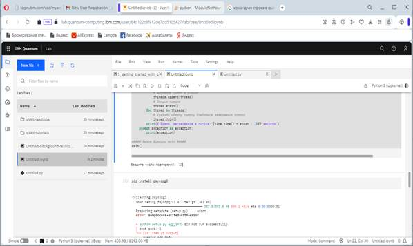
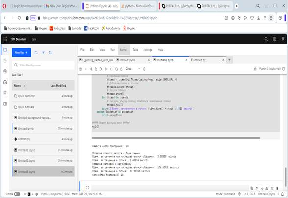

Цель практической работы:закрепление и расширение знаний, полученных обучающихся при теоретическом изучении предмета, приобретение конкретных практических навыков создания запросов в IBM Quantum Lab.
Методические указания к выполнению работы:
Необходимо выполнить реализацию запросов в IBM Quantum Lab. Для этого прежде всего необходимо зарегистрироваться на данном ресурсе. Главное окно сервиса представлено на рисунке 1.

Рисунок 1 – Главное окно IBM Quantum
Для входа в личный кабинет требуется пройти процедуру авторизации (рисунок 2).

Рисунок 2 – Окно авторизации в IBM Quantum
После успешной регистрации и авторизации на сервисе, откроется личный кабинет, как показано на рисунке 3.

Рисунок 3 – Окно IBM Quantum Lab
В данном окне необходимо выбрать Notebook Qiskit и создать новый файл для ввода кода программы. Для начала работы нужно установить модуль Psycopg2 для подключения к базе PostgreSQL для выполнения SQL-запросов при помощи pip: pip install psycopg2-binary (рисунок 4).

Рисунок 4 – Окно установки модуля Psycopg2 для подключения к базе PostgreSQL
После успешной установки пакета необходимо запустить программу запроса на выполнение. На экране появится строка для ввода числа повторений (рисунок 5).

Рисунок 5 – Окно запроса ввода числа повторений
Далее нужно ввести число повторений, как показано на рисунке 6.

Рисунок 6 – Окно ввода числа повторений
После запуска запроса на исполнение программа выдаст результат запроса к базе данных (рисунок 7).

Рисунок 7 – Результат исполнения запроса к БД
Задание:
Создать последовательные и параллельные запросы к разработанной в соответствии с вариантом БД в IBM Quantum Lab.
Контрольные вопросы:
1. Функция выполняющая запрос к базе данных в потоке
2. IBM Quantum Lab
3. Метод, выполняющий запрос в базу данных из Python?